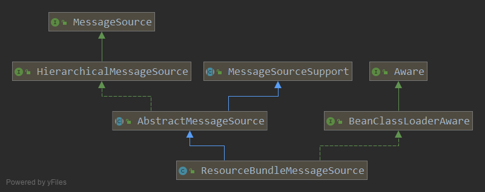

我们可以利用MessageSource接口中的getMessage方法去访问本地化资源文件
MessagesSource只是一个接口，真正的实现类是ResourceBundleMessageSource, 它默认会加载classpath路径下messages开头的properties文件。如果要自定义路径，配置spring.messages.basename的值即可。默认格式是messages_国家_地区.properties。我们这里省略了地区。

LocaleContextHolder类中的getLocale方法可以获取请求中Accept-Language属性的值,如果获取不到语言类型，会去messages.properties文件中去找
1
2
3
4
5
6
7
8
9
10
11
12
13
14
15
16
17
18
19
20
21
22
23
24
25
26
|
import org.springframework.context.MessageSource;
import org.springframework.context.i18n.LocaleContextHolder;
import org.springframework.stereotype.Service;
@Service
public class I18nService {
private final MessageSource messageSource;
public I18nService(MessageSource messageSource) {
this.messageSource = messageSource;
}
public String getMessage(String code) {
return getMessage(code, (Object[]) null);
}
public String getMessage(String code, Object... args) {
return messageSource.getMessage(code, args, LocaleContextHolder.getLocale());
}
public String getMessage(String code, Object[] args, String defaultMessage) {
return messageSource.getMessage(code, args, defaultMessage, LocaleContextHolder.getLocale());
}
}
|
1
| spring.messages.basename=i18n/messages
|